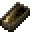
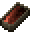
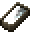
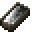
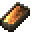
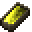
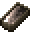
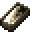

TerrafirmaGreg is a minecraft modpack with advanced recipe and crafts requiring different alloys like bronze and brass,theses various alloys are created by combining ores different proportions.This website will help understand the ore and percentage of each ore you need to make that alloy.There is a built in Alloy calculator so you can get the correct ratios for your crafting needs.
Here is a table of the early Alloies and ores that are needed to progress through out the modpack. It shows how much perecntage you need of a certian ore and what alloy it makes when combinded with a different ore. Each Ore has a link to the Terrairmacraft wiki to learn more about it.
| Alloy | Ore | Percentage |
|---|---|---|
|  Bronze |  Copper | 88-92% |
|  Tin | 8-12% | |
| Brass | Copper | 88-92% |
|  Zinc | 8-12% | |
|  Rose Gold | Copper | 15-30% |
|  Gold | 70-85% | |
|  Sterling Silver | Copper | 20-40% |
|  Silver | 60-80% |
Here is a working alloy calculator to help you figure out how much of a certian ore you need to make the alloy you are looking for.this is for early game use as it is only a 4 slots which a Ceramic Vessel Has. You can only have a max of 16 in each slot.
Calculation details will appear here.
Result will appear here.
Ingot count will appear here.
Here is a short youtube video to help learn how to make Bronze and other alloys.